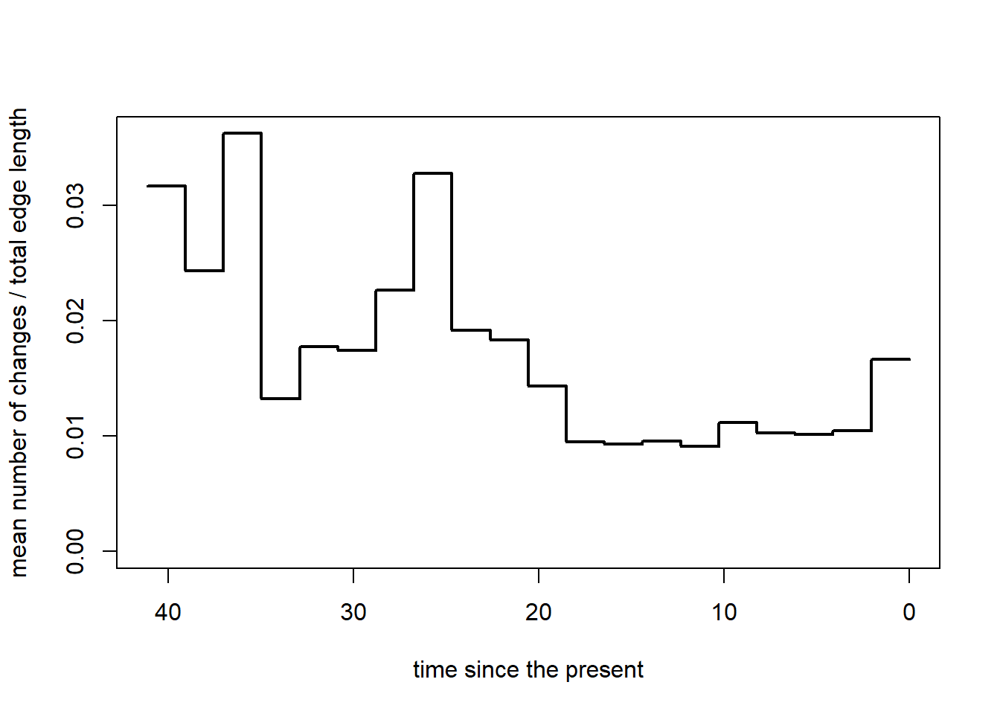

The following code is a mixture of code written by Liam Revell within the Phytools package, especially from the source code of the ctt() function (version Oct 2023),
and from the code for Figure 4 in Stephens et al., (2023):Paper; GitHub Repo
Ref [1]
Ref [2]
Ref [3]
Open the required Libraries
Code
rm(list=ls())library(phytools) # v. ‘1.9.16’ for phylo stuff
Loading required package: ape
Loading required package: maps
Code
library(dplyr) # for data handling
Attaching package: 'dplyr'
The following object is masked from 'package:ape':
where
The following objects are masked from 'package:stats':
filter, lag
The following objects are masked from 'package:base':
intersect, setdiff, setequal, union
Code
library(evobiR) # v. ‘1.1’ To reorder data based on treelibrary(geiger) # v. ‘2.0.11’ for Mk Modelslibrary(tictoc) # for time measurements of computationslibrary(tidyr) # data handlinglibrary(ggplot2)library(viridis)
Loading required package: viridisLite
Attaching package: 'viridis'
The following object is masked from 'package:maps':
unemp
My Data (Legumes) * read back in from RDS
Code
# Read in the data and tree ============================traitData <-read.csv("../input/Matrix_all_traits.csv", stringsAsFactors =FALSE, header =TRUE)tree <-read.tree("../input/Mimo_metachronogram_mmc.tre")tree <-as.phylo(tree)new_tip_names<-read.csv("../input/replace_tip_labels.csv")# Subset data by trait armature <- traitData %>%select(Taxon, Armatures) %>%filter(!is.na(Taxon) &!is.na(Armatures)) %>%distinct(.) # 2 species were duplicated (Acacia baileyana and Chidlowiana sanguinea)# Correct tip names in the tree with new labelstree2 <- treetree2$tip.label <- new_tip_names[[2]][match(tree$tip.label, new_tip_names[[1]])]# Small subset with 10 species:#armature <- armature[1:10,]# match data and tree ===================================row.names(armature) <- armature$Taxonsp_drop <-setdiff(tree2$tip.label, armature$Taxon)# Drop these species from the tree, because we need matching data between tree and traitstree3 <-drop.tip(tree2, sp_drop)tree4 <-ladderize(tree3)matches <-match(armature$Taxon, tree4$tip.label, nomatch =0)armature2 <-subset(armature, matches !=0)setdiff(tree4$tip.label, armature2$Taxon) # 0
character(0)
Code
setdiff(armature2$Taxon, tree4$tip.label) # 0
character(0)
Code
tree <- tree4# Make data for Mk models for Armaturearmature2[armature2=="0"] <-"no_armature"armature2[armature2=="1"] <-"armature"trait <-unique(armature2)trait <-ReorderData(tree, trait, taxa.names ="row names")trait$Armatures <-as.factor(trait$Armatures)trait$Taxon <-NULL# Clean environment to free memory:rm(tree2, tree3, tree4, traitData, new_tip_names, armature, matches, sp_drop)# Mk models ============================# estimate the rates of transitioning between ancestral states given a hypothesis (either equal rates(ER), or different rates(ARD))# computing time = 11.58stic() equal <-fitDiscrete(tree, trait, model ="ER")toc()
6.08 sec elapsed
Code
# computing time = 42.85stic() ard <-fitDiscrete(tree, trait, model ="ARD")toc()
16.25 sec elapsed
Code
# Calculate AIC weightsaic.discrete <-setNames(c(equal$opt$aic, ard$opt$aic), c("equal", "different"))weights <-aicw(aic.discrete)weights # ARD model performs better for armature/no armature
fit delta w
equal 958.2419 36.04662 1.487907e-08
different 922.1952 0.00000 1.000000e+00
Code
# we need a slightly different format for Simmap:trait2 <-as.factor(trait$Armatures)names(trait2) <-rownames(trait)# For 100 simulation (nsim=100) --> computing time = 725.28s && 373.7 sec elapsedtic() mtrees <-make.simmap(tree, trait2, model ="ARD", nsim =100)
make.simmap is sampling character histories conditioned on
the transition matrix
Q =
armature no_armature
armature -0.028557812 0.028557812
no_armature 0.006412091 -0.006412091
(estimated using likelihood);
and (mean) root node prior probabilities
pi =
armature no_armature
0.5 0.5
tic( "loop")rm(list=ls())mtrees <-readRDS("../output/RDS/mtrees_multiSimmap.rds")### Required function ========================================================================== #getChanges<-function(tree){ states<-sort(unique(getStates(tree))) nc<-sapply(tree$maps,length)-1 b<-which(nc>0) nc<-nc[b] xx<-vector() H<-nodeHeights(tree)for(i in1:length(b)){for(j in1:nc[i]){ ss<-names(tree$maps[[b[i]]])[j+1] x<-rep(H[b[i],1]+cumsum(tree$maps[[b[i]]])[j],2) xx<-c(xx,setNames(x[1],paste(names(tree$maps[[b[i]]])[j:(j+1)],collapse="->"))) } } xx}# ============================================================================================= ## Create a function to find the segment ID for a given time value:# ============================================================================================= #find_segment_id <-function(time) { segment_indices <-cut(time, breaks = segs_df[, 2], labels =FALSE)return(segs_df$segsID[segment_indices])}## ============================================================================================= ## ================================================================= ## Working the multiSiammp# ================================================================= ## Get all changes from all simulations so that we can loop through them: changes <-sapply(mtrees, getChanges) # Transform the original changes list of matrices from sapply() for all simulations to dataframe # add trans_no to each transition based on grouping by transition # (i.e, there are two trans_no = 1, one for each transition type) i_changes_list <-list() for (i in1:length(changes)) { i_changes <- changes[[i]] # for each simulation from multiSimmap# extract transition types and times and assign ID column for simmap simulation i_changes_df <-data.frame(transition =names(i_changes), time = i_changes, N_sim = i) i_changes_df$transition <-as.factor(i_changes_df$transition)# Add trans_no to each transition from a group (transition type) i_changes_df <- i_changes_df %>%arrange(time) %>%group_by(transition) %>%mutate(trans_no =row_number()) i_changes_list[[i]] <- i_changes_df }# Final Table without edge.lengths: changes_table <- plyr::rbind.fill(i_changes_list, fill=T) changes_table_wo_edge <- changes_table# ====================================================================================================== ### Step 1: Loop over each simulation and extract # - breaks for segments# - edge.lengths# - rates for each character state transition# ====================================================================================================== #object_list <-list()rates_list <-list()# First Level of the loop for (Nsimulation in1:100){ # ====================================================================================================== ## Setting global variables for the Analysis# ====================================================================================================== ## set the number of time-segments for which everything will be calculated: b <-20# reduce to one tree to extract parameters from each simulation separately: tree <-as.phylo(mtrees[[Nsimulation]])# extract time since root h <-max(nodeHeights(tree))# calculate the time segments based on time since the origin and the time segments that were set by the user segs <-cbind(seq(0,h-h/b,h/b),seq(1/b*h,h,h/b))# ====================================================================================================== ## Transitions & Timing (getChanges)# ====================================================================================================== ## ================================================================= ## Working changes from each simmap simulation separately:# ----------------------------------------------------------------- ## Changes per Segments:# ================================================================= ## Loop through all changes & Calculate average number of changes per time interval (segs; set with "b") nchanges<-rep(0,b)for(i in1:length(changes)) { # loop through all simulations from simmap # loop through all individual changes from one simmap simulation and calculate relative changes per time segment# nchanges = collects the relative number of changes (of all changes) per segmentfor(j in1:length(changes[[i]])) { ind<-which((changes[[i]][j]>segs[,1])+ (changes[[i]][j]<=segs[,2])==2) nchanges[ind]<-nchanges[ind]+1/length(changes) } # closing of 2nd level } # closing of 1st levelrm(i,j) # ================================================================= ## Working changes from each simmap simulation separately:# ----------------------------------------------------------------- ## Edge Lengths per Segments:# ================================================================= ## Edge.Lengths = Number of species in the phylogeny per time slot (increases naturally with time)# ! Note: has to be accounted for when showing transition rates# Here we calculate edge lengths for each segement separatly:# -------------------------------------------------------------------------------------------------------- ## Compute Lineages-Through-Time with ltt() function from the phytools package to extract edge.lengths from LTT <-ltt(tree,plot=FALSE)# transform LTT data so that we can use it: LTT <-cbind(LTT$ltt[2:(length(LTT$ltt)-1)], # Number of species at each node minus the root LTT$times[2:(length(LTT$ltt)-1)], # "start" time for each node minus the root LTT$times[3:length(LTT$ltt)]) # "end" time for each node minus the root# -------------------------------------------------------------------------------------------------------- ### Now we loop through all segments to extract matching edge.lengths =================================== ## set count variable: ii<-1# Create an empty vector to store edge lengths edge.length <-rep(0, nrow(segs))# 2nd level loop: # (for one tree because LTT is calculated for one tree)for (i_segs in1:nrow(segs)) {# Find the indices of LTT segments that overlap with the current segs segment overlap_indices <-which(LTT[, 2] <= segs[i_segs, 2] & LTT[, 3] >= segs[i_segs, 1])# Calculate edge length for the current segs segment using vectorized operations# 3rd level loop: for (ii in overlap_indices) {# edge.length should contain the edge lengths for all segments: edge.length[i_segs] <- edge.length[i_segs] + LTT[ii, 1] *# counts number of lineages between time intervals (min(segs[i_segs, 2], LTT[ii, 3]) -# end time intervalmax(segs[i_segs, 1], LTT[ii, 2])) # start time interval } # 3rd level closing } # 2nd level closing edge.length_backup <- edge.length edge.length <-c(1, edge.length)# edge.length should contain the edge lengths for all segments in a given simulation# adding segsID coulmn to edge lengths: edge.length_df <-data.frame(edge.length = edge.length, segsID =seq(1,b+1))########################################################################################################## WIP: ########################################################################################################## ================================================================= ## Working the multiSimmap:# ----------------------------------------------------------------- ## Edge Lengths at each transition event# ================================================================= ### Adapted code from the segments by me# we need the table for all simmaps: changes_table so that we can loop through it# set count variable: ii<-1# Create an empty vector to store edge lengths edge.length_transitions <-rep(0, nrow(changes_table)) edge.lengths_all <-list() changes_times <- changes_table$time# 2nd level loop: # (for one tree because LTT is calculated for one tree)for (i_changes in1:nrow(changes_table)) {# Find the indices of LTT segments that overlap with the current segs segment# "which start times of the Lineages are smaller or equal to the time the change happened and which end times of the lineages are larger or equal to the time the change happend."# --> this gives the node numbers that were there when the transition happend overlap_indices <-which(LTT[, 2] <= changes_times[i_changes] & LTT[, 3] >= changes_times[i_changes])# Calculate edge length for the current segs segment using vectorized operations# 3rd level loop: for (ii in overlap_indices) { # ii = number of lineages when a transition occurred# edge.length should contain the edge lengths for all segments: edge.length_transitions[i_changes] <- edge.length_transitions[i_changes] + LTT[ii, 1] edge.length_transitions2 <-data.frame(time = changes_times[i_changes], edge.length = edge.length_transitions[i_changes]) edge.lengths_all[[i_changes]] <- edge.length_transitions2 } # 3rd level closing } # 2nd level closing edge.lengths_all_df <- plyr::rbind.fill(edge.lengths_all) changes_table_w_edge <-merge(changes_table_wo_edge, edge.lengths_all_df, by ="time")# Write to file (once is enough)write.csv(changes_table_w_edge, "../output/CSV/changes_table_w_edgelengths.csv")########################################################################################################## END WIP ########################################################################################################## ============================================================================================= ## Create a dataframe with transitions, times, edge.lengths, segment IDs.# ============================================================================================= ### We are here = first level loop: along simulations# Again extract changes for each simulation separately: current_simulation <-as.data.frame(changes[[Nsimulation]], row.names =names(changes[[Nsimulation]]))names(current_simulation) <-c("time") current_simulation$transition <-rownames(current_simulation) current_simulation$N_sim <- Nsimulation current_simulation <- current_simulation %>%arrange(time) current_simulation$IDtransition <-seq(1:nrow(current_simulation))# ============================================================================================= ## Working the segments: # ============================================================================================= ## Create a vector of segment IDs segs_df <-as.data.frame(segs) new_row <-data.frame(V1 =0, V2 =0) segs_df <-rbind(new_row, segs_df) segs_df$segsID <-seq(1,b+1) # now we can calculate the breaks from it# Use the apply function to find the segment ID for each row in current_simulation current_simulation$segsID <-apply(current_simulation, 1, function(row) { time <-as.numeric(row["time"])return(find_segment_id(time)) }) # closing loop from within the apply-function (2nd level loop closing)# assign edge.length based on segment ID current_simulation <-unique(merge(current_simulation, edge.length_df, by="segsID", all = T))names(segs_df) <-c("segs_start", "segs_end", "segsID") current_simulation <-unique(merge(current_simulation, segs_df, by ="segsID", all = T))# Calculate rate for each simulation: current_simulation_rates <- current_simulation %>%group_by(segsID, N_sim, transition) %>%mutate(Nchanges =length(!is.na(IDtransition))) %>%mutate(rate = Nchanges / edge.length) rates_list[[Nsimulation]] <- current_simulation_rates object <-list(segments=segs, nchanges=nchanges, edge.length=edge.length[-1], tree=tree)class(object)<-"ctt" object_list[[Nsimulation]] <- object } # 1st level closingtoc() # 1218.6 sec elapsed = 20.3 min
Currently, if there was no transition of a specific type at a specific time, there is no indication of a rate. However, the rate should be zero if there was no transition. In the following code I try to replicate each time segment twice and add transitions for both types with rates == 0.
I’m not done with this yet.
segsID time transition N_sim
Min. : 1.00 Min. : 0.2593 Length:14876 Min. : 1.00
1st Qu.:16.00 1st Qu.:32.4640 Class :character 1st Qu.: 26.00
Median :19.00 Median :37.5279 Mode :character Median : 50.00
Mean :16.94 Mean :34.5870 Mean : 50.56
3rd Qu.:20.00 3rd Qu.:40.0881 3rd Qu.: 75.00
Max. :21.00 Max. :41.1477 Max. :100.00
NA's :490 NA's :490
IDtransition edge.length segs_start segs_end
Min. : 1.00 Min. : 1.0 Min. : 0.00 Min. : 0.00
1st Qu.: 36.00 1st Qu.: 580.6 1st Qu.:28.80 1st Qu.:30.86
Median : 72.00 Median :1603.7 Median :34.98 Median :37.03
Mean : 72.63 Mean :1378.6 Mean :30.76 Mean :32.80
3rd Qu.:108.00 3rd Qu.:2327.5 3rd Qu.:37.03 3rd Qu.:39.09
Max. :162.00 Max. :3194.7 Max. :39.09 Max. :41.15
NA's :490
Nchanges rate
Min. : 1.0 Min. :0.000313
1st Qu.: 5.0 1st Qu.:0.008106
Median :12.0 Median :0.010741
Mean :14.7 Mean :0.021019
3rd Qu.:25.0 3rd Qu.:0.013319
Max. :45.0 Max. :2.000000
Code
# Your data manipulation coderates_df <- rates_df %>%group_by(N_sim, segsID, transition) %>%mutate(rate =ifelse(is.na(transition), 0, rate),Nchanges =ifelse(is.na(transition), 0, Nchanges),segs_mean = (segs_end+ segs_start)/2) %>%# Adjust the threshold (1e-6) as neededmutate(avg_time =ifelse(Nchanges ==1, time, mean(time))) %>%mutate(avg_time =ifelse(is.na(avg_time), segs_mean, avg_time)) %>%arrange(segsID) %>%unique()# Replace NAs in Transition types to set the rates to 0 where no transition occurred:rates_df_copy <- rates_df# Replace "NA" with the first transition typerates_df_copy$transition[is.na(rates_df_copy$transition)] <-unique(rates_df_copy$transition)[[2]]# Create a second copy of the data frame with "NA" transitionsrates_df_copy2 <- rates_df# Replace "NA" with the second transition typerates_df_copy2$transition[is.na(rates_df_copy2$transition)] <-unique(rates_df_copy2$transition)[[3]]# Combine the two copies to get the final data frame with replicatesfinal_df <-bind_rows(rates_df_copy, rates_df_copy2)########## ====================================================================================== ##### Specify the transition type for which you want to ensure ratesspecific_transition_type <-unique(rates_df_copy$transition)[[2]]# Generate a data frame with all possible combinations of segsID and the specific transition typeall_combinations <-expand_grid(segsID =unique(final_df$segsID),transition = specific_transition_type)# Left join the generated data frame with the original data framefinal_df1 <- all_combinations %>%left_join(final_df, by =c("segsID", "transition")) %>%mutate(rate =ifelse(is.na(rate), 0, rate))# Generate a data frame with all possible combinations of segsID and the specific transition typeall_combinations <-expand_grid(segsID =unique(final_df1$segsID),transition = specific_transition_type)# Left join the generated data frame with the original data framefinal_df1 <- all_combinations %>%left_join(final_df1, by =c("segsID", "transition")) %>%mutate(rate =ifelse(is.na(rate), 0, rate))########## ====================================================================================== ##### Specify the transition type for which you want to ensure ratesspecific_transition_type <-unique(rates_df_copy$transition)[[1]]# Generate a data frame with all possible combinations of segsID and the specific transition typeall_combinations2 <-expand_grid(segsID =unique(final_df$segsID),transition = specific_transition_type)# Left join the generated data frame with the original data framefinal_df2 <- all_combinations2 %>%left_join(final_df, by =c("segsID", "transition")) %>%mutate(rate =ifelse(is.na(rate), 0, rate))# Generate a data frame with all possible combinations of segsID and the specific transition typeall_combinations2 <-expand_grid(segsID =unique(final_df2$segsID),transition = specific_transition_type)# Left join the generated data frame with the original data framefinal_df2 <- all_combinations2 %>%left_join(final_df2, by =c("segsID", "transition")) %>%mutate(rate =ifelse(is.na(rate), 0, rate))########## ====================================================================================== ##### Sort the data frame if neededfinal_df <- final_df %>%arrange(segsID) # You can specify the sorting order# Now final_df contains rows with "NA" in the "transition" column replaced by two different transition types.# Your ggplot codeggplot(final_df, aes(y = rate, x = segs_end, col =factor(transition), group =factor(transition))) +#geom_point() +geom_line() +ylim(0, 0.015)+theme_light()+scale_color_viridis(discrete=T)
plot.ctt<-function(x,...){ h<-max(nodeHeights(x$tree)) args<-list(...)if(!is.null(args$type)){ type<-args$type args$type<-NULL } else type<-"rate"if(!is.null(args$show.tree)){ show.tree<-args$show.tree args$show.tree<-NULL } else show.tree<-FALSEif(!is.null(args$add)){ add<-args$add args$add<-NULL } else add<-FALSEif(is.null(args$ylim)) args$ylim<-if(type=="number")c(0,max(x$nchanges)) elsec(0,max(x$nchanges/x$edge.length))if(is.null(args$xlim)) args$xlim<-c(max(x$segments),min(x$segments))if(is.null(args$lwd)) args$lwd<-2if(is.null(args$xlab)) args$xlab<-"time since the present"if(is.null(args$ylab)) args$ylab<-if(type=="number") "mean number of changes"else"mean number of changes / total edge length" args$type<-"l" args$x<-h-as.vector(t(x$segments)) args$y<-if(type=="number") rbind(x$nchanges,x$nchanges) elserbind(x$nchanges/x$edge.length,x$nchanges/x$edge.length)if(!add) do.call(plot,args)elsedo.call(lines,args)if(show.tree) plotTree(x$tree,add=TRUE,ftype="off",lwd=1,color=make.transparent("blue",0.1),mar=par()$mar,direction="leftwards",xlim=args$xlim)}plot.ctt(object, type="rate")

Code
length(object$nchanges)
[1] 20
Code
length(object$edge.length)
[1] 20
Plot the rate
Code
###############################################################################################################rates_df %>%ungroup() %>%ggplot(aes(x = time , y = rate, col =as.factor(transition))) +#geom_point()+geom_line(lwd =5)+#geom_smooth(method = "lm", formula = rate~time)+scale_color_viridis(discrete=T, alpha =0.6)+scale_y_log10()+theme_light()
Warning: Transformation introduced infinite values in continuous y-axis
Code below function comes from script Ref[3]: Simmap.R
Code
## Ref[1], Ref[0] -> Ref[2]transition_times <-function(simmap){# below adapted from Liam Revells' phytools blog # http://blog.phytools.org/2015/08/getting-timing-of-trait-changes-from.html# extracts raw transition times from a simmap (collapses multiple transitions# down into single transition events)# get tips and their states x <- phytools::getStates(simmap,"tips")# get unique states states <-sort(unique(x))# get length of states m <-length(states)# below makes a little matrix describing transitions ct <-sapply(states, function(x,y) sapply(y, function(y,x) paste(x,"->", y, sep=""), x = x), y = states)rm(x, states)# then a matrix to invalidate self->self transitions ii <-matrix(TRUE, m, m)diag(ii) <-rep(FALSE, m)# then a list to store results in changes <-vector(mode="list", length = m*(m -1))rm(m)# named by types of transitionsnames(changes) <-as.vector(ct[ii])rm(ct, ii)# then singling out maps where transitions happen (where there is more than 1 state) nc <-sapply(simmap$maps, length) -1 ind <-which(nc >0) nc <- nc[ind]# getting the node heights (measure of time/branch lengths) across the tree H <- phytools::nodeHeights(simmap) maps <- simmap$maps[ind]# then looping through and calculating the node heights of each transitionfor(i in1:length(maps)){for(j in1:nc[i]){ sc <-paste(names(maps[[i]])[j:(j +1)], collapse ="->") h <- H[ind[i], 1] +cumsum(maps[[i]])[j] changes[[sc]] <-c(changes[[sc]], as.numeric(h)) } }rm(nc, ind, h, H, i, j, sc, maps)# removing any nulls from list of changes and sorting small to large changes <- changes[!sapply(changes, is.null)] changes <-lapply(changes, sort, decreasing =FALSE)# now convert this changes list into nice data frame output output <-data.frame()for(i in1:length(changes)){ df <- dplyr::bind_cols(changes[i]) df <- df %>%mutate(transition =colnames(df)) %>%rename(nodeheight =1) output <-rbind(output, df) }# node heights are the height above the root, so time but inverse along the tree# to get time from node heights need to subtract from max height of tree output$time <-max(nodeHeights(simmap)) - output$nodeheight# get rid of nodeheight column output <- output[-1]# and return the output! to graph etc. output}# End of function ====================================================================================== ## Ref[0] -> Ref[3]mtrees <-readRDS("../output/RDS/mtrees_multiSimmap.rds")# apply function across list of multiple simulations:armature_transitions <-data.frame()for(i in1:length(mtrees)){ temp <-cbind(i, transition_times(mtrees[[i]])) armature_transitions <-rbind(armature_transitions, temp)}rm(temp, i)table(armature_transitions$transition)
# build new data frame with cumulative number of transitionsarmature_trans_cumul <-data.frame()for(n in1:100){ trans <- armature_transitions %>% dplyr::filter(i == n) %>% dplyr::group_by(transition) %>% dplyr::mutate(trans_no =row_number(i)) armature_trans_cumul <-rbind(armature_trans_cumul, trans)}rm(n, trans)##### copied from somewhere else in the code from the same script....:# first need to know average number of transitions, roundedtrans_avg_length <- armature_trans_cumul %>% dplyr::group_by(transition, i) %>% dplyr::mutate(no_trans =max(trans_no)) %>% dplyr::ungroup() %>% dplyr::filter(trans_no == no_trans) %>% dplyr::group_by(transition) %>% dplyr::mutate(avg_length =round(mean(no_trans), digits =0)) %>% dplyr::select(transition, avg_length) %>% dplyr::ungroup() %>% dplyr::distinct()# now knowing this, can rearrange data and average times across rowsavg_trans_times <- armature_trans_cumul %>% dplyr::group_by(transition, trans_no) %>% dplyr::mutate(avg_time =mean(time)) %>% dplyr::mutate(SE_time =sqrt(var(time) /length(time))) %>% dplyr::select(transition, trans_no, avg_time, SE_time) %>% dplyr::distinct()# reduce avg_trans_times to trans_avg_lengthavg_trans_times_a2na <- avg_trans_times %>% dplyr::filter(transition =="armature->no_armature") %>% dplyr::filter(trans_no <= trans_avg_length[1,2])
Warning: Using one column matrices in `filter()` was deprecated in dplyr 1.1.0.
ℹ Please use one dimensional logical vectors instead.
Code
avg_trans_times_na2a <- avg_trans_times %>% dplyr::filter(transition =="no_armature->armature") %>% dplyr::filter(trans_no <= trans_avg_length[2,2])avg_trans_times <-rbind(avg_trans_times_a2na, avg_trans_times_na2a)rm(avg_trans_times_a2na, avg_trans_times_na2a)# export these results to csv in case I need themreadr::write_csv(avg_trans_times, "../Fig4Pollination/mean_transition_times_armature_MCC.csv")#### Plotting ======================================# install.packages("prettyGraphs") #to set transparancy of colors with "alpha"library(prettyGraphs)myColours =c("steelblue", "#FFBB00")myColoursAlpha <-add.alpha(myColours, alpha=0.4)my_cols <-setNames(myColoursAlpha, c("armature->no_armature", "no_armature->armature"))pdf("../Fig4Pollination/armature_transition_times_mean_hist.pdf", height =2.8, width =6)min <-min(avg_trans_times$avg_time)max <-max(avg_trans_times$avg_time)ax <-pretty(min:35, n =20)arm_to_no_arm <- avg_trans_times %>% dplyr::filter(transition =="armature->no_armature") %>% dplyr::mutate(arm_to_no_arm = avg_time) %>% dplyr::ungroup() %>% dplyr::select(arm_to_no_arm)no_arm_to_arm <- avg_trans_times %>% dplyr::filter(transition =="no_armature->armature") %>% dplyr::mutate(no_arm_to_arm = avg_time) %>% dplyr::ungroup() %>% dplyr::select(no_arm_to_arm)a2na <-hist(arm_to_no_arm$arm_to_no_arm, breaks = ax, plot =FALSE)na2a <-hist(no_arm_to_arm$no_arm_to_arm, breaks = ax, plot =FALSE)plot (a2na, col = myColours[1], xlab ="Time of transitions (mya)", main ="", ylab ="number of transitions", ylim =c(0, 40), xlim =c(100,0)) # alter if x values change!plot (na2a, col = my_cols[2], add =TRUE)# data for density grapharm_to_no_arm <- armature_transitions %>% dplyr::filter(transition =="armature->no_armature") %>% dplyr::mutate(arm_to_no_arm = time) %>% dplyr::select(arm_to_no_arm, simulation = i)no_arm_to_arm <- armature_transitions %>% dplyr::filter(transition =="no_armature->armature") %>% dplyr::mutate(no_arm_to_arm = time) %>% dplyr::select(no_arm_to_arm, simulation = i)# calculate density curvedensity_a2na <-density(arm_to_no_arm$arm_to_no_arm)density_na2a <-density(no_arm_to_arm$no_arm_to_arm)# plot the densityplot(density_a2na, lwd =2, col = myColours[1], xlim =c(58,0), xlab ="Time of transitions (mya)", bty ="l", ylim=c(0, 0.2),cex.lab =1.4, cex.axis =1.4, main =NULL, sub =NULL, title =NULL)lines(density_na2a, lwd =2, col = myColours[2], xlim =c(58,0))# add data-points with noise in the X-axisrug(jitter(no_arm_to_arm$no_arm_to_arm), col = my_cols[1])
Warning in rug(jitter(no_arm_to_arm$no_arm_to_arm), col = my_cols[1]): some
values will be clipped
Code
rug(jitter(arm_to_no_arm$arm_to_no_arm), col = my_cols[2])
Warning in rug(jitter(arm_to_no_arm$arm_to_no_arm), col = my_cols[2]): some
values will be clipped
Code
dev.off()
png
2
Code
##################pdf("../output/Figs/RatesPlot.pdf", height =8, width =10)par(mar =c(5.1, 5.1, 4.1, 2.1)) # increase marginsarm_to_no_arm <- changes_table %>% dplyr::filter(transition =="armature->no_armature")# first set up basic plot parametersplot(arm_to_no_arm$trans_no ~ arm_to_no_arm$time,type ="p", bty ="l", xlim =c(100,0), ylim =c(0,60),col = my_cols[1], pch =15,xlab ="Time of transitions (mya)", ylab ="number of transitions",cex.lab =1.8, cex.axis =1.8)# then loop through all data and add all points and lines to plot for 1000 simulationsfor(n in1:1000){ test <- armature_transitions %>% dplyr::filter(i == n) %>% dplyr::group_by(transition) %>% dplyr::mutate(trans_no =row_number(i)) no_arm_to_arm <- test %>% dplyr::filter(transition =="no_armature->armature") arm_to_no_arm <- test %>% dplyr::filter(transition =="armature->no_armature")points(arm_to_no_arm$trans_no ~ arm_to_no_arm$time, col = my_cols[1], pch =15)lines(arm_to_no_arm$trans_no ~ arm_to_no_arm$time, col = my_cols[1])points(no_arm_to_arm$trans_no ~ no_arm_to_arm$time, col = my_cols[2], pch =17)lines(no_arm_to_arm$trans_no ~ no_arm_to_arm$time, col =my_cols[2])}# then add average points and line in blue# first prep datano_arm_to_arm <- avg_trans_times %>% dplyr::filter(transition =="no_armature->armature") %>% dplyr::filter(trans_no <= trans_avg_length[1,2])arm_to_no_arm <- avg_trans_times %>% dplyr::filter(transition =="armature->no_armature") %>% dplyr::filter(trans_no <= trans_avg_length[2,2])# then add to plotpoints(arm_to_no_arm$trans_no ~ arm_to_no_arm$avg_time,col ="blue", pch =15)lines(arm_to_no_arm$trans_no ~ arm_to_no_arm$avg_time, col ="blue")points(no_arm_to_arm$trans_no ~ no_arm_to_arm$avg_time,col ="darkblue", pch =17)lines(no_arm_to_arm$trans_no ~ no_arm_to_arm$avg_time, col ="darkblue")# add legendlegend("topleft",legend =c("armature->no_armature", "no_armature->armature"),col =c(my_cols[1],my_cols[2]),pch =c(15, 17), pt.lwd =0.001, bty ="n", cex =1.8)dev.off()
png
2
My adaptation of pollination study
Code
## below adapted from other script: https://github.com/rubysaltbush/pollination-macroevolution/blob/main/scripts/analysis/simmap.Rarmature_transitions <- rates_df# build new data frame with cumulative number of transitionsarmature_trans_cumul <-data.frame()for(n in1:100){ trans <- armature_transitions %>%ungroup() %>% dplyr::filter(N_sim == n) %>% dplyr::group_by(transition) %>% dplyr::mutate(trans_no =row_number(N_sim)) armature_trans_cumul <-rbind(armature_trans_cumul, trans)}rm(n, trans)# =========================================================================================================== ## Now we are summarizing over the 100 simulations:# =========================================================================================================== ###### copied from somewhere else in the code from the same script....:# first need to know average number of transitions and across simulations, rounded. trans_avg_length <- armature_trans_cumul %>% dplyr::group_by(transition, N_sim) %>% dplyr::mutate(no_trans =max(trans_no)) %>% dplyr::ungroup() %>% dplyr::filter(trans_no == no_trans) %>% dplyr::group_by(transition) %>% dplyr::mutate(avg_length =round(mean(no_trans), digits =0)) %>% dplyr::select(transition, avg_length) %>% dplyr::ungroup() %>% dplyr::distinct()# now knowing this, can rearrange data and average times and edge.lengths across rowsavg_trans_times <- armature_trans_cumul %>% dplyr::group_by(transition, trans_no) %>% dplyr::mutate(avg_time =mean(time)) %>% dplyr::mutate(SE_time =sqrt(var(time) /length(time)),avg_edge.length =mean(edge.length)) %>%ungroup() %>%group_by(N_sim, segsID, transition) %>%mutate(avg_Nchanges =mean(Nchanges)) %>% dplyr::select(transition, trans_no, avg_time, SE_time, avg_edge.length, avg_Nchanges) %>% dplyr::distinct()